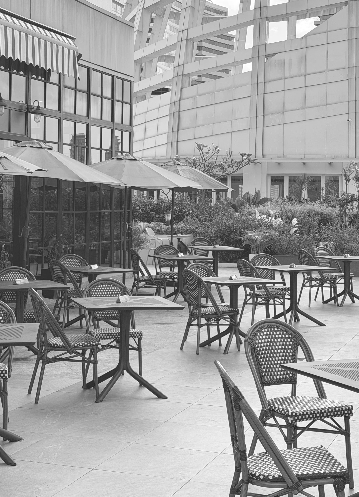
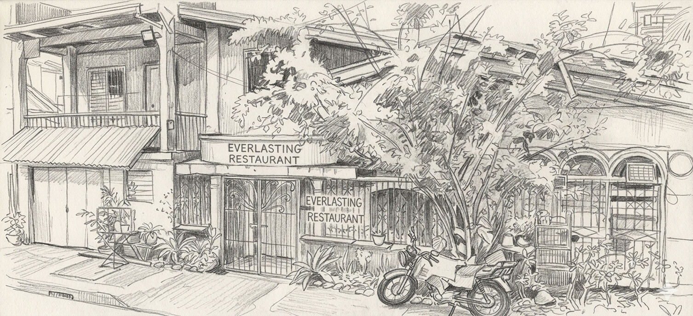

My love for food didn't start in a fancy restaurant or a trendy multi-roaster café. It started in a small family restaurant in the province called Everlasting, where my grandfather and mother cooked authentic Filipino food with nothing but heart, fire, and a traditional pugon fueled by ipa that never seemed to go cold.

I grew up in that kitchen long before I was tall enough to reach the stove. At six or seven years old, I was already helping serve food to customers. I watched my grandfather and mother carefully simmer beloved classics like menudo, afritada, adobo, and kare-kare, and masterfully stir massive batches of lomi and pancit guisado for everyone from everyday regulars to entire wedding celebrations.
Food, in our family, was never just a meal. It was how we showed up for people.
By high school, I was finally behind the stove myself. The very first dish I ever cooked was our signature lomi. That moment felt less like learning a skill, and more like stepping into a deeply rooted family tradition that had always been waiting for me. That is the exact passion I carry with me today.
Today, I'm based in Metro Manila, but I follow the food wherever it leads. As a home cook and passionate food traveler, my journey takes me from hidden local spots in the city to out-of-town adventures across the Philippines, and even beyond our borders.
I am drawn to Filipino food culture above all—especially uncovering regional dishes and the rich history behind how they came to be. But if there’s a new flavor waiting in any corner of the world, I’ll never say no to trying it.
This website is my love letter. It is a tribute to Filipino food and culture, to the hidden gems worth traveling hours for, to the quiet cafés that feel like a sanctuary in a busy day, and most importantly, to every person behind the counter who has a story to tell.
Because every dish has a story. And I'm here to find it.
Welcome to my table. I'm so glad you're here.